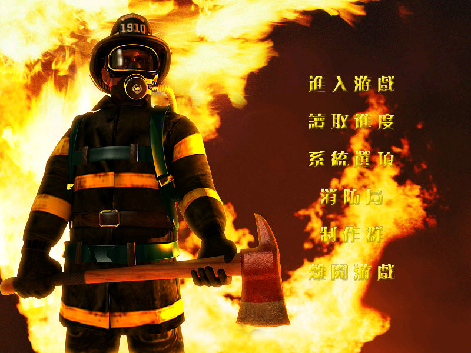
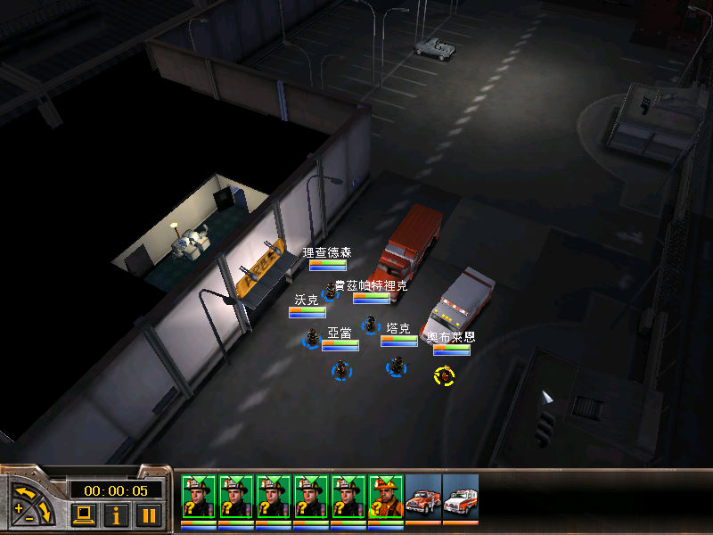

名稱：烈火英豪1／烈火雄心1／英雄 (Fire Department／Fire Chief／Fire Captain／Emergency: Fire Response，中文／英文版)
簡介：Monte Cristo 2003年出品的消防救災模擬遊戲，但採用即時戰術的方式進行任務，由
DreamCatcher代理發行，繁中版由協倫代理發行，簡中版由陽光娛動代理發行 [待補]。


保護：繁中版或簡中版為光碟，英文版為光碟StarForce 3.03
檔案：nocd.rar = 英文免光碟檔